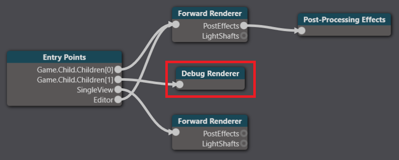
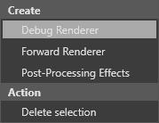
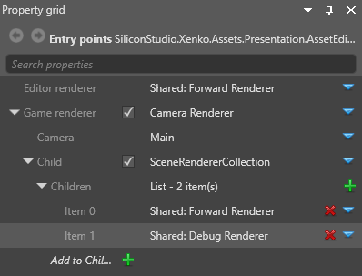

Debug renderer
The debug renderer is a placeholder renderer you can use with scripts to print debug information. By default, the debug renderer is included in the graphics compositor as a child of the game entry point.

Create a debug renderer
To create a debug renderer, right-click the graphics compositor editor and select Debug renderer.

Connect a debug renderer to an entry point
In most cases, you want the debug renderer to share an entry point with one or more forward renderers. To do this, use a scene renderer collection and select the debug renderer and forward renderer(s) as children, as in the screenshot below:

Use a debug renderer
To use the debug renderer, reference it in your script and add debug render stages.
For example, the Debug physics shapes script included in Stride uses the debug renderer to display collider shapes at runtime.
using System.Linq;
using System.Threading.Tasks;
using Stride.Input;
using Stride.Engine;
using Stride.Physics;
using Stride.Rendering;
using Stride.Rendering.Compositing;
namespace MyGame
{
public class DebugPhysicsShapes : AsyncScript
{
public RenderGroup RenderGroup = RenderGroup.Group7;
public override async Task Execute()
{
//set up rendering in the debug entry point if we have it
var compositor = SceneSystem.GraphicsCompositor;
var debugRenderer =
((compositor.Game as SceneCameraRenderer)?.Child as SceneRendererCollection)?.Children.Where(
x => x is DebugRenderer).Cast<DebugRenderer>().FirstOrDefault();
if (debugRenderer == null)
return;
var shapesRenderState = new RenderStage("PhysicsDebugShapes", "Main");
compositor.RenderStages.Add(shapesRenderState);
var meshRenderFeature = compositor.RenderFeatures.OfType<MeshRenderFeature>().First();
meshRenderFeature.RenderStageSelectors.Add(new SimpleGroupToRenderStageSelector
{
EffectName = "StrideForwardShadingEffect",
RenderGroup = (RenderGroupMask)(1 << (int)RenderGroup),
RenderStage = shapesRenderState,
});
meshRenderFeature.PipelineProcessors.Add(new WireframePipelineProcessor { RenderStage = shapesRenderState });
debugRenderer.DebugRenderStages.Add(shapesRenderState);
var simulation = this.GetSimulation();
if (simulation != null)
simulation.ColliderShapesRenderGroup = RenderGroup;
var enabled = false;
while (Game.IsRunning)
{
if (Input.IsKeyDown(Keys.LeftShift) && Input.IsKeyDown(Keys.LeftCtrl) && Input.IsKeyReleased(Keys.P))
{
if (simulation != null)
{
if (enabled)
{
simulation.ColliderShapesRendering = false;
enabled = false;
}
else
{
simulation.ColliderShapesRendering = true;
enabled = true;
}
}
}
await Script.NextFrame();
}
}
}
}
For information about how to use this script, see Colliders.